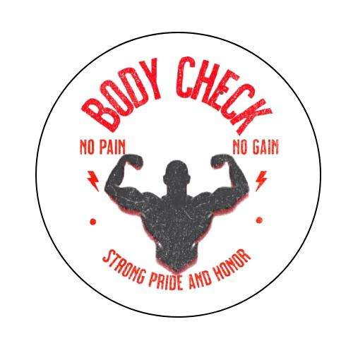

BodyCheck
Gender: --
Age: --
BMI Score: --
You're --
Body Mass Index (BMI) is a simple calculation using your height and weight to estimate body fat. You can use the BodyCheck BMI calculator below to find your BMI. Keep in mind that BMI doesn’t account for muscle mass, so it’s possible that what appears as excess fat may actually be muscle. Always consult your doctor for more insight.